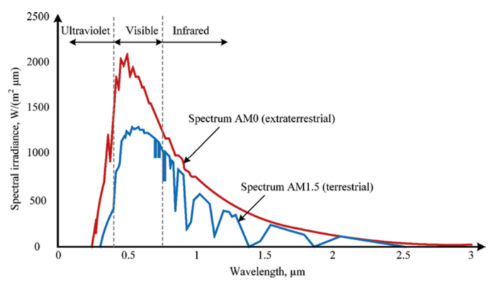
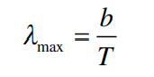
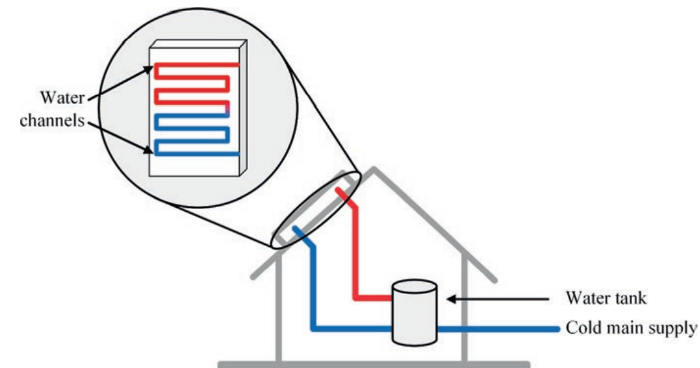
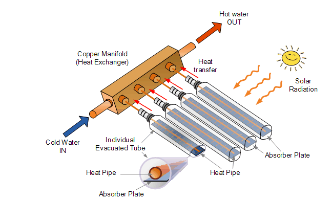
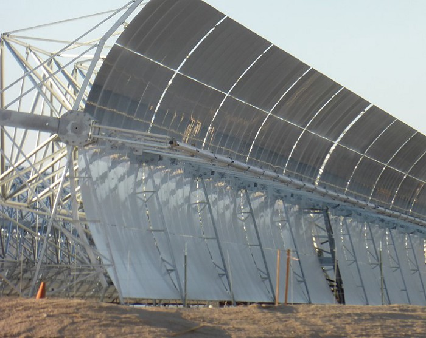
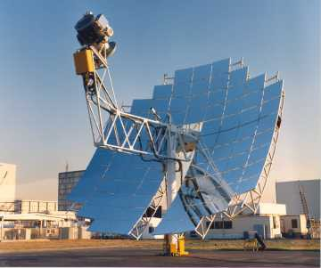
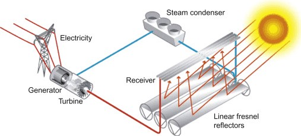
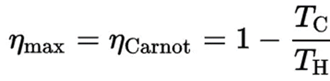

As the saying goes, the Stone Age did not end because we ran out of stones; we transitioned to better solutions. The same opportunity lies before us with energy efficiency and clean energy. Steven Chu
Fundamentally, there are only three original sources of energy, solar nuclear fusion, heat from the core of the earth, and energy from the rotation of the earth and the moon. All energy on the earth comes from these original sources of energy which subsequently create primary energy including fossil fuels and renewables.
According to the first law of thermodynamics, energy is conserved, it cannot be created nor destroyed but can only be transformed from one form to another. This implies that all the energy in the universe is constant. On earth, we get a portion of this energy in the form of coal, oil, natural gas, wind, solar radiation, tides, magma, etc. However, the systems we run require energy in different forms like electricity (in most cases) and calories in the food we eat. Most of the human activity in connection to energy has revolved around converting the maximum amount of primary energy into desired forms in the least environmentally detrimental methods.
Solar thermal energy is one of the primary sources of energy that has been used largely in a majority of the world since historical days. In Mesopotamia focusing mirrors were used to light fires several centuries BC. Leonardo Da Vinci proposed the construction of a concave mirror of large size on the side of a hill to be used to heat objects in the focal point. Setting aside unproven legends such as the Archimedes’ burning mirrors, it is clear that solar power has fascinated people from early ages and that it was directed toward demonstrating the thermal energy from the sun. Given that it is a renewable source of energy, solar thermal energy continues to gain popularity even at the current population age. [1]
The Origins of Solar Energy:
Nuclear fusion in the sun’s core generates solar radiation which travels to the Earth’s atmosphere. The process involves two hydrogen isotopes, deuterium with one neutron in the nucleus, and tritium, with two neutrons, that react to produce a helium atom and a neutron.
The energy released in the process travels from the core of the sun at temperatures of about 15 million °C to the surface at temperatures of about 6000 °C where it is radiated in all directions. Only a very small fraction of this radiation reaches the earth’s atmosphere where it is further filtered and by the time it strikes the surface of the Earth, the energy is, on average, 1 kW/m2.
About 48% of this radiation is from the visible spectrum, 7% on the UV range, and about 43% on the infrared range.
Solar Thermal Systems:
Solar thermal systems can be active or passive. Passive systems include greenhouses, Trombe wall, and daylighting while active systems can be concentrating or non-concentrating.
1. Passive Heating Systems;
Passive solar heating aims at absorbing maximum heat from solar energy into a structure while preventing it from radiating heat away. Greenhouses, Trombe walls, and Daylighting are the commonest examples.
Greenhouses are by far the most known passive solar thermal systems worldwide. To understand greenhouse technology, it is necessary to have knowledge of the spectrum of solar radiation and Wien’s displacement law. The solar radiation spectrum looks something like this,

From the chart, it is clear that the maximum intensity wavelength is in the visible spectrum. This can be compared to the peak wavelength of radiation from an object at room temperature (300 K). Wien’s law gives this wavelength as a function of the object’s absolute temperature.

Where,
b is Wien’s displacement constant which is 2898 μm × K if the wavelength is expressed in μm. A house at 300 K has λmax of approx. 9.66 μm which falls in the infrared range, a long-wavelength radiation. The roofs and walls of greenhouses are therefore made to restrict the passage of this long-wavelength radiation and in effect restrict heat loss. The interior is thus heated.
A Trombe wall consists of a glass window on the outside, an air gap, and a wall with high heat capacity. The wall is painted black to absorb more sunlight. During the ventilation cycle, sunlight stores heat in the thermal wall and warms the air in the gap causing circulation through vents at the top and the bottom of the wall. During the heating cycle, the Trombe wall radiates stored heat.

Daylighting method optimes the window glass for maximum light absorption and minimum radiation out of the structure by minimizing the passage of long-wavelength radiation.
2. Active Heating Systems;
These systems use solar energy to heat a working fluid in pipes which can then be used to drive a turbine to produce electricity or to simply transport the heat to a different location. These systems are roughly divided into concentrating and non-concentrating collectors which produce heat at moderate and low temperatures.
Non-concentrating collectors exist chiefly of two types: Flat Plate Collectors (FPCs) and Evacuated Tube Collectors. Flat plate collectors are some of the more common systems seen on rooftops of modern houses. It employs similar properties to the Trombe wall with the black pipe capturing heat while the glass panel minimizes radiative losses. FPCs have about 50% overall efficiency in converting solar radiation to heated fluid.

The evacuated tube collector (ETC) consists of a number of sealed glass tubes that have a thermally conductive copper rod or pipe inside allowing for much high thermal efficiency and working temperature compared to the flat plate solar collectors even during a freezing cold day. The collectors have tubes made of borosilicate glass, 75% SiO2 and 8–12% B2O3, or soda-lime glass, 70% silicon dioxide, 15% soda (sodium oxide), and 9% lime (calcium oxide). The evacuated tubes house absorber plates and copper pipes filled with internal fluid. The heat is transferred from the absorber to the copper tube without losses in a vacuum, and to the internal fluid in the copper pipes. The hot internal fluid from many evacuated tubes is collected in a copper manifold where water is heated through a heat exchanger while the internal fluid, usually alcohol, condenses and returns through the manifold.

Concentrated solar collectors are my favorite and come in different configurations. The basic idea is to use lenses and/or mirrors to concentrate a large area of sunlight onto a receiver. CSP (Concentrated solar power) can incorporate energy storage in their systems in form of sensible heat or latent heat. These systems exist in four main optical types: Parabolic trough, dish, Fresnel reflector, and solar power tower.
Parabolic Trough
A parabolic trough consists of a linear parabolic reflector that concentrates light onto a receiver positioned along the reflector’s focal line. The receiver consists of a tube filled with a working fluid (usually molten salt) which is heated to 150–350 °C and then pumped through a heat exchanger to produce superheated steam, which is then used to drive a conventional turbine generator and produce electricity. For maximum efficiency, the reflector follows the sun during the day by rotating about a single axis. The solar to electrical efficiency is about 10%. Parabolic troughs are the most developed CSP technology in the world.

Dish Engine System
The dish Stirling consists of a single parabolic reflector that concentrates light onto a receiver at its focal point. The working fluid in the receiver is heated to 250–700 °C and then used to run a Stirling engine to generate power. These systems provide quite high solar-to-electric efficiencies of about 31% and their modular nature also provides scalability.

Fresnel Reflector
Fresnel reflectors are made of many thin, flat mirror strips to concentrate sunlight onto tubes through which working fluid is pumped. Flat mirrors allow more reflective surface in the same amount of space than a parabolic reflector, thus capturing more of the available sunlight, and they are much cheaper than parabolic reflectors.

Solar Power Tower
A solar power tower can be thought of as a circular Fresnel reflector. It consists of an array of dual-axis tracking reflectors (heliostats) that concentrate sunlight on a central receiver atop a tower that contains a working fluid. The working fluid, usually water- steam or molten salt, is heated to 500–1000 °C and then used as a heat source for a power generation or energy storage system. While these systems are less developed than parabolic trough systems, they can reach higher efficiencies and have better energy storage capabilities.
The Conclusion:
Solar thermal systems (concentrating) are definitely a great energy resource and will play a moderate, if not major, role in our post-fossil world. While the technologies are in no way a single answer to the renewable energy problems, they have some competitive advantage over our other popular sources. For example, most solar thermal technologies have higher efficiencies in converting sunlight to electricity than photovoltaic solar panels. Their major drawbacks in comparison to PV systems are lower versatility, shorter lifespans, and sometimes more expensive as PVs have seen a major reduction in cost/KWh over the years.
These systems, however, are a great choice for micro and macro grid systems and their higher efficiencies is a major factor for increased investment in the field. The efficiency of solar thermal systems, unlike PVs, is dictated majorly by the temperature to which they can heat the working fluid. Higher temperatures mean higher efficiencies. This is a consequence of Carnot’s efficiency which dictates the maximum efficiency of a thermodynamic system.

Where,
· TH is the absolute temperature (Kelvins) of the hot reservoir,
· TC is the absolute temperature (Kelvins) of the cold reservoir.
The overall efficiency is however affected by other factors such as the quality of the mirrors or lenses and the working fluid employed.
Concentrated solar thermal systems are quite an interesting energy source and this article only serves as an introduction to the whole technology. I plan to dig deeper into the specific technologies, issues, and their use in Sub-Saharan Africa as I believe they are a great source for both macro grids and microgrids, the latter to which I have a bias.
References
[1] Renewable Energy Crash Course: A Concise Introduction